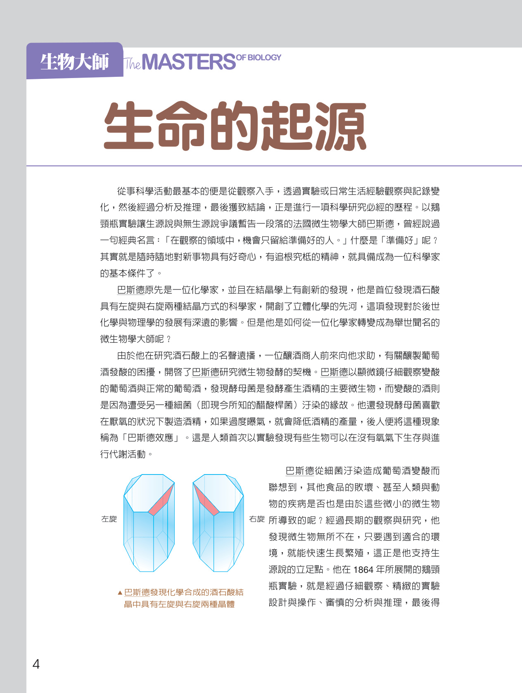
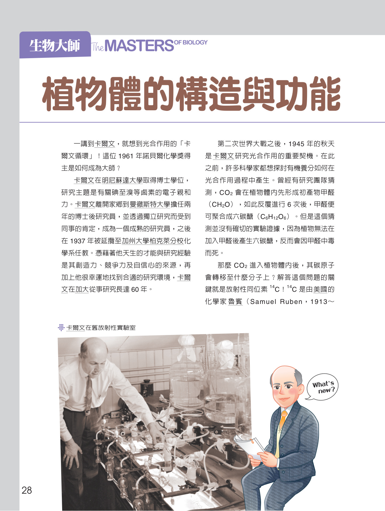
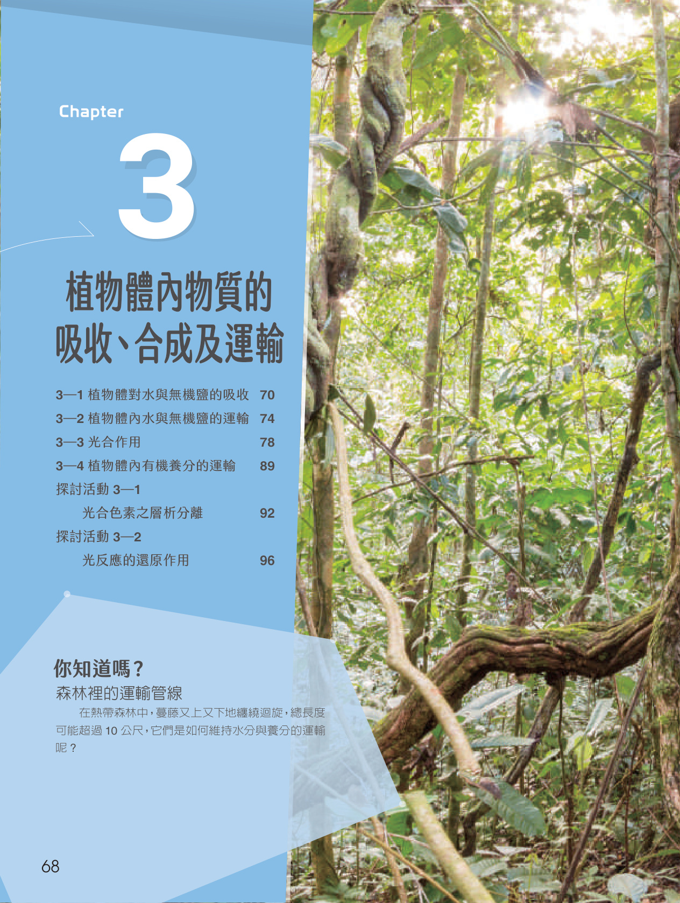
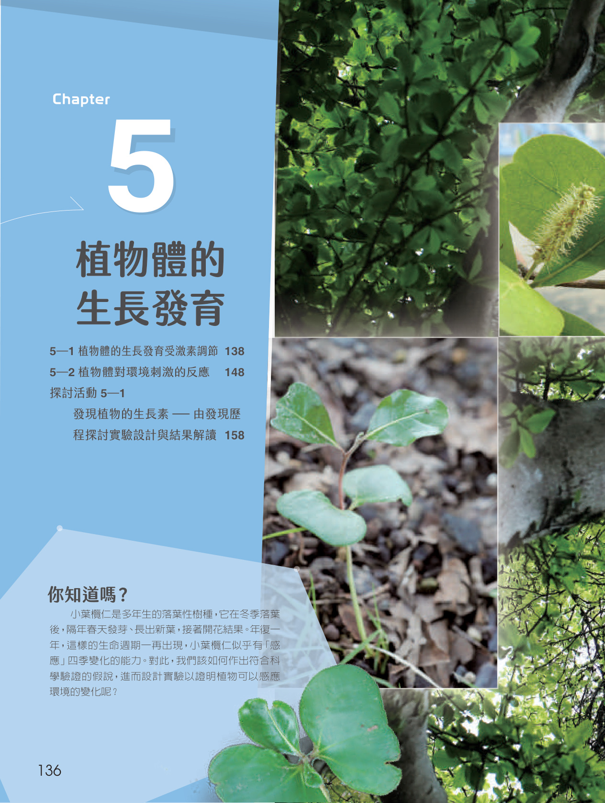

CHAPTERS
選擇章節，探索生命與植物之美
點選章節封面進入章節，瀏覽每一節的課本概念圖解、重點引導、優化版互動教學網頁與教學影片。

CHAPTER 01 · Origin & Evolution of Life · 優化版
第 1 章 生物的起源與演化
- 1-1生源說與無生源說
- 1-2生命的起源與化學演化
- 1-3生命形式的多樣化

CHAPTER 02 · Plant Structure & Function · 優化版
第 2 章 植物體的構造與功能
- 2-1植物體的構造與組成層次
- 2-2植物體的營養器官

CHAPTER 03 · Plant Transport & Photosynthesis · 優化版
第 3 章 植物體內物質的吸收、合成及運輸
- 3-1植物體對水與無機鹽的吸收
- 3-2植物體內水與無機鹽的運輸
- 3-3光合作用
- 3-4植物體內有機養分的運輸

CHAPTER 04 · Plant Reproduction · 優化版
第 4 章 植物的生殖
- 4-1被子植物的無性生殖
- 4-2被子植物的有性生殖
- 4-3種子的構造與萌發

CHAPTER 05 · Plant Growth & Development · 優化版
第 5 章 植物體的生長發育
- 5-1植物體的生長發育受激素調節
- 5-2植物體對環境刺激的反應
INQUIRY ACTIVITIES
全冊探討活動專區（優化版）
從徒手切片、色素層析、希爾反應到生長素發現史，以實驗數據、貼標籤模擬與科學證據深化探究與實作素養。
活動 2-2植物特化探索站課本 P.62–67
營養構造的形態適應與特化
採集或觀察多樣特化器官實物：紅樹林氣生根與支持根、胡蘿蔔儲藏根；馬鈴薯塊莖、洋蔥鱗莖、黃金葛攀緣莖、仙人掌葉狀莖；豬籠草捕蟲葉、九重葛艷麗苞葉、洋蔥肉質鱗葉等，藉形態與內部構造分辨器官來源，探討植物對乾旱、淹水與攀爬等環境因子的形態適應。
開啟優化版網頁